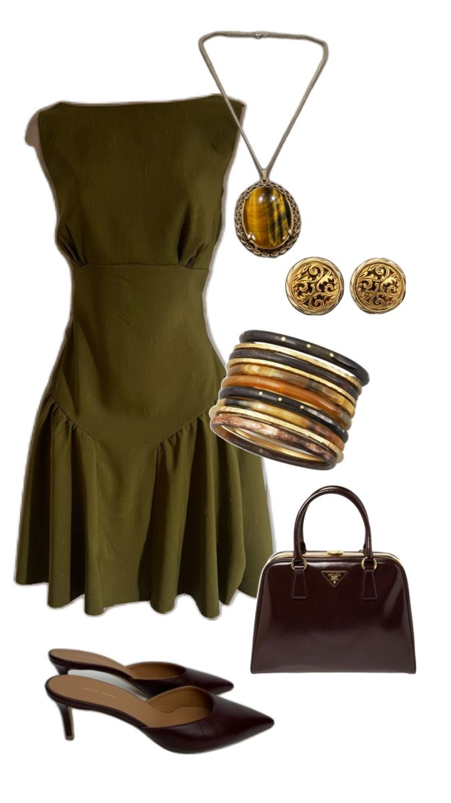
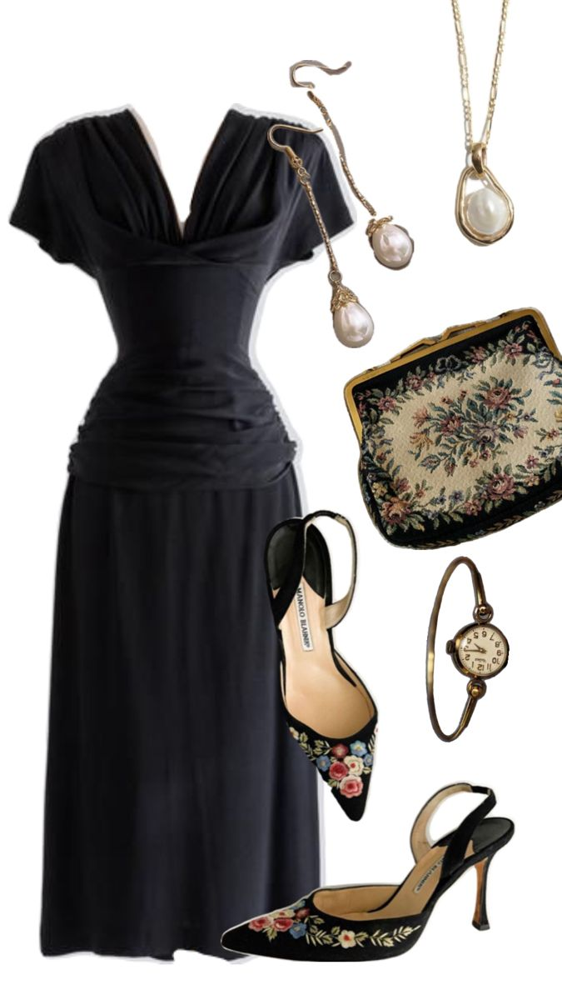

The First Date
Veronica stared at her phone, Logan’s words still echoing in her mind. The Nines. Tonight. With him.
She turned to Danaya, who was watching her with an eager grin.
Danaya: “Well?”
Veronica: “Yes, I'd love to go!”
Danaya: “I knew it! You’re going to have the best time!”
Veronica let out a shaky laugh, her heart racing. She hung up the phone and felt a whirlwind of excitement and
nerves hit her all at once. This was really happening.
Danaya: “Okay, you need to get you ready. You can’t just throw on your usual work clothes for a date
like this.”
Danaya was right. Veronica couldn’t just show up at The Nines in anything. She walked over to her wardrobe and
carefully pulled together two outfits to choose from.
Staring at the options, she felt the weight of the decision pressing on her.
Veronica: “Danaya, I don’t know what to pick!”
Danaya: “Just go with what feels right!”
Veronica took a deep breath. She had to choose, but she wasn’t sure which one would be the
best fit.
Danaya: “So, which one?”
Veronica gazed at both outfits, torn between the choices. Which one would she pick?

